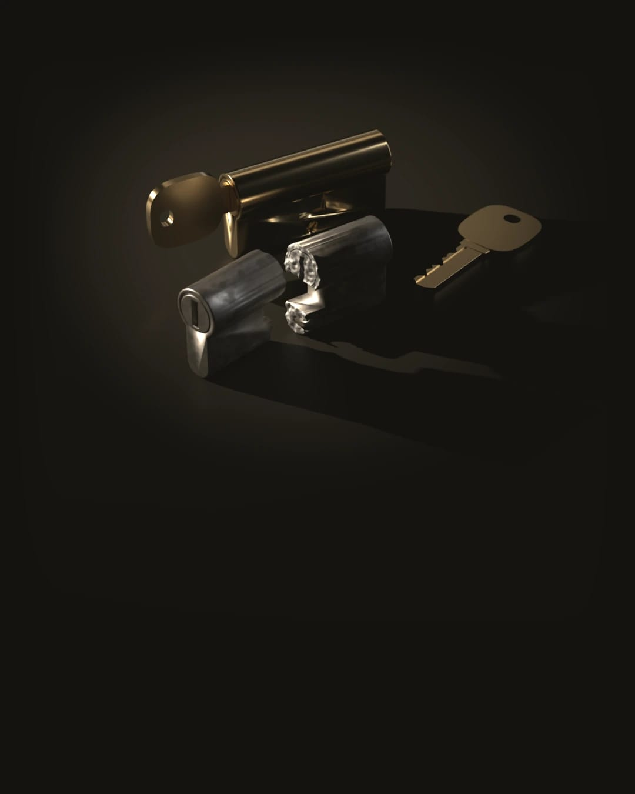
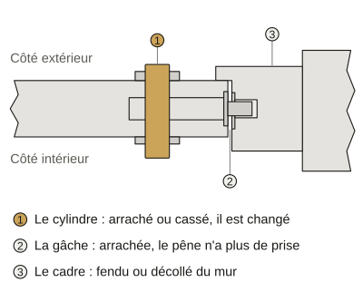
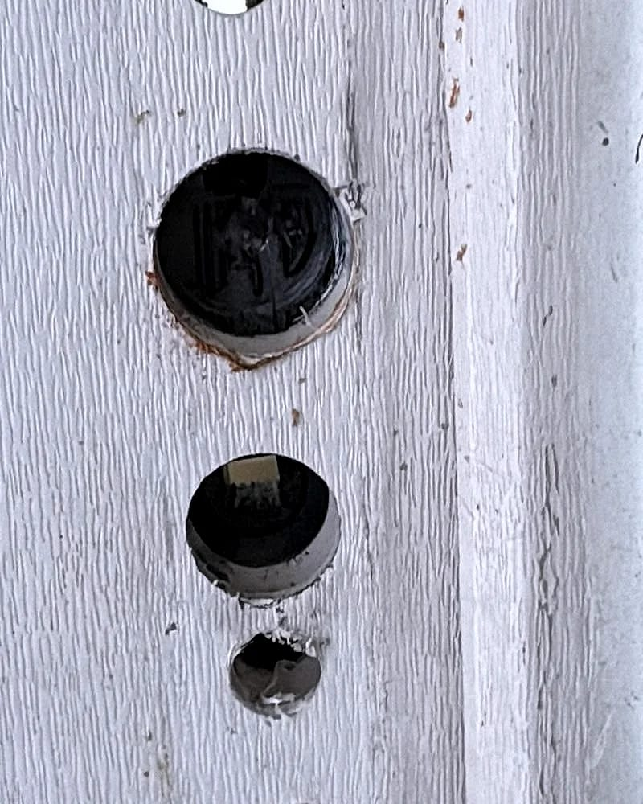

Porte forcée : on vient la fermer
On ferme d’abord. Le reste attend un devis.
On décroche jour et nuit, tous les jours. De 21 h à 6 h, à partir de 95 € TTC. En journée :
À partir de 75 € TTC
Il est et on décroche. Prix de départ : Il est et on décroche. Prix de départ :Avant que le serrurier se mette en route, on vous dit par appel ou par SMS qui vient et le prix de départ.
Le serrurier remet d’abord votre porte en état de fermer à toute heure et le reste se décide ensuite avec votre assureur.
Dans quel ordre faire les choses

Si la porte est forcée, n’entrez pas.
Quelqu’un peut encore être à l’intérieur. Appelez le 17.
Photographiez avant de toucher à quoi que ce soit.
La porte, la serrure et le cadre. Votre assureur vous demandera ces photos.
Déposez plainte.
Au commissariat ou à la gendarmerie, qui doivent l’enregistrer. Gardez le récépissé.
Déclarez le vol à votre assureur.
Votre contrat fixe le délai. Il ne peut pas être plus court que 2 jours ouvrés.
Faites fermer la porte.
Mettre le logement en sécurité n’attend pas l’accord de l’assureur. Les grosses réparations doivent l’attendre.
D’après la fiche officielle « Assurance habitation et vol : conditions de prise en charge » (service-public.gouv.fr, vérifiée le 10 septembre 2025).
Ce qu’on fait d’abord
Le serrurier fait le strict nécessaire pour que votre porte ferme à nouveau.
- Un cylindre arraché ou cassé est remplacé. Sans lui, la porte ne fermerait plus à clé.
- Si la serrure ou le cadre sont trop abîmés, il pose une fermeture provisoire en attendant la réparation.
- Il vous remet une facture détaillée avec le prix TTC de chaque pièce. Votre assureur la demandera.
Ce qui peut attendre demain
Remplacer toute la serrure, poser une serrure trois points ou blinder la porte : ces travaux se décident au calme.
Ils se font sur devis gratuit et avec l’accord de votre assureur s’il intervient.
Si vous signez ce devis chez vous hors urgence, la loi vous laisse 14 jours pour changer d’avis.

Une porte forcée n’attend pas le matin
On décroche de 21 h à 6 h comme en journée. Une intervention commencée la nuit part de 95 € TTC.
Le serrurier vous appelle avant d’arriver. Si vous attendez chez un voisin, dites-le-lui.
Ce qu’on se demande après une effraction
Faut-il attendre la police avant de faire fermer la porte ?
Si la police vient sur place, attendez son passage avant de toucher à la porte. Sinon, photographiez tout puis faites fermer la porte.
Mettre le logement en sécurité fait partie des mesures d’urgence. L’assureur ne vous demande pas d’attendre son accord.
L’assurance rembourse-t-elle la serrure ?
Ça dépend de votre contrat habitation. La garantie vol ne joue que dans les cas qu’il prévoit, par exemple le vol par effraction.
Gardez la facture détaillée, le récépissé de plainte et les photos des dégâts.
Combien coûte une mise en sécurité ?
À partir de 75 € TTC. Un cylindre arraché ne demande pas le même travail qu’un cadre fendu. Le devis donne le prix exact.
Si vous le refusez, vous réglez le déplacement et le diagnostic : 75 € TTC le jour et 95 € TTC entre 21 h et 6 h.
Un SMS vous redit cette règle après l’appel.
Mes clés ont été volées avec mon sac : que faire ?
Faites changer le cylindre même si la porte n’a pas été forcée. Avec vos papiers, la personne qui a vos clés connaît aussi votre adresse.
Regardez aussi votre contrat. La fiche officielle cite le vol commis avec des clés volées parmi les cas couverts quand le contrat le prévoit.
Votre porte ne ferme plus
Appelez dès que vous êtes en sécurité, même tard. S’il le faut, la police passe d’abord et la porte ensuite.
Appeler